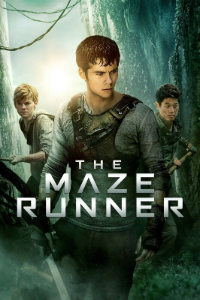

The Maze Runner
Movie Details
- TMDB Rating: 6.8/10
- Genres: Suspense Mystery, Action, Mystery, Sci-Fi, Thriller
- Release Date: Sep 19 2014
- Run Time: 1h 53m
Plot
Thomas, a teenager, arrives in a glade at the center of a giant labyrinth. Like the other youths dumped there before him, he has no memory of his previous life. Thomas quickly becomes part of the group and soon after demonstrates a unique perspective that scores him a promotion to Runner status -- those who patrol the always-changing maze to find an escape route. Together with Teresa, the only female, Thomas tries to convince his cohorts that he knows a way out.